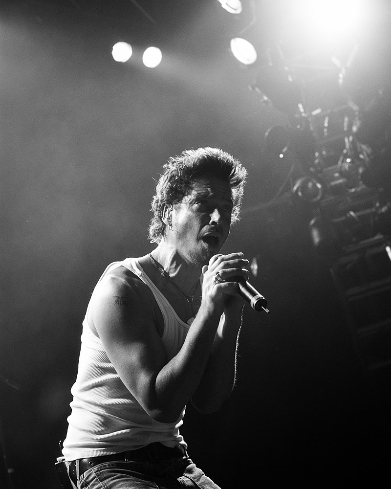

Like many, I’m a fan of the late singer and songwriter, Chris Cornell. I also wanted to try text analysis, so this small project is an initial attempt at examining lyrics across his career.
I wanted to know how the diversity of words in songs associated with Cornell changed over time and across his different projects, from Soundgarden to Temple of the Dog to his solo career to Audioslave.
An important qualification when it comes to this analysis: The lyrics for this analysis were retrieved through the Genius API. Though songwriting credits are available on Genius pages, they were not included in the API data (as far as I can tell with my untrained eye). As a result, I didn't distinguish between songs solely credited to Cornell as the writer and songs written collaboratively or primarily by other band members. Additionally, some songs in the sample were not performed by Cornell as the lead vocalist. I kept these tracks in the analysis for consistency with the album-level comparisons, but they're noted below.
I didn't look at every album that Cornell released during his lifetime, but instead the first and last studio albums that he released solo, and as a member of Soundgarden, Temple of the Dog, and Audioslave.
This analysis looks at lyrics from Euphoria Mourning (1999) and Higher Truth (2015), Temple of the Dog (1991), Ultramega OK (1988) and King Animal (2012), and Audioslave (2002) and Revelations (2006).
So, across those albums, how diverse was the vocabulary used in each song?
Unique words were counted after lyrics were cleaned of filler words, like vocalizations. The percentage of unique words was then calculated by dividing the number of unique words by the total word count of the cleaned lyrics.
Here are the songs with the highest percentage of unique words across each album (all percentages are approximate):
One takeaway from this is that lyrical diversity was not solely driven by Cornell's own songwriting. Some of the tracks with the highest percentage of unique words came from Soundgarden songs, reflecting the creativity of multiple songwriting voices.
I also wanted to know to what extent vocabulary changed between the debut and final albums for each band or solo release.
The percentage of unique words increased the most when comparing Cornell's debut solo album to his final solo release.
In contrast, the percentage of unique words used on Soundgarden's final album decreased when compared to its debut.
And the number of unique words on Audioslave's last album increased slightly compared to the band's first album.
These observations suggest that changes in word diversity didn't follow a pattern throughout Cornell's career and instead depended on the project.
Another way I wanted to explore word diversity was by looking at the breakdown of pronoun usage and see if there was any shift between the first and last albums.
To do this, I grouped subjective, objective, and possessive forms into broader first-, second-, and third-person categories.
The bars above are organized by project release date, with the earliest release date of the debut album dictating order. This is to compare how the breakdown of pronoun usage changed between first and last albums (with the exception of Temple of the Dog).
If pronoun usage is considered an indicator of whether a song’s speaker is focused on personal experiences or on others, these percentages suggest that King Animal and Revelations lean toward personal reflection and expression.
Albums like Temple of the Dog, Euphoria Mourning, Higher Truth, and Audioslave seem to be balanced in how much the narrator sings about himself versus others. Of these albums, the lyrics on Audioslave appear to focus slightly more on others.
Soundgarden's Ultramega OK stands out for its third-person pronoun usage. However, the use of first-person pronouns on the band's final album, King Animal, is comparable to first-person usage on other albums.
Audioslave's debut and final albums saw a drop in pronoun usage, specifically in second-person and third-person pronouns, suggesting a shift to lyrics focused more on self-reflection than on other people.